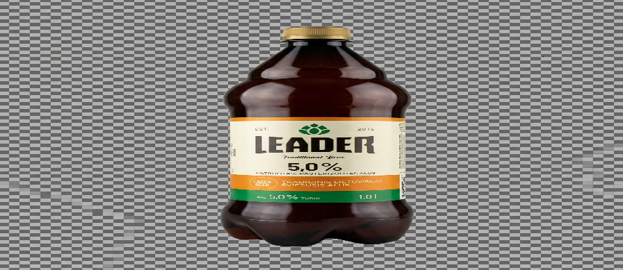

KBLAM84
alus, kuris niekada neblogas!
rytojus nebus blogas!
KBLAM84's Institute of Highly Questionable Research
Support the creator of this website with your tip.
v fund the research by clicking the button below v

Current research subject: Leader.